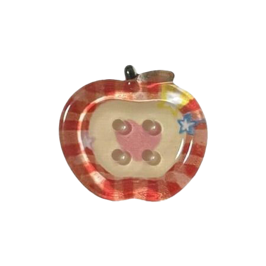
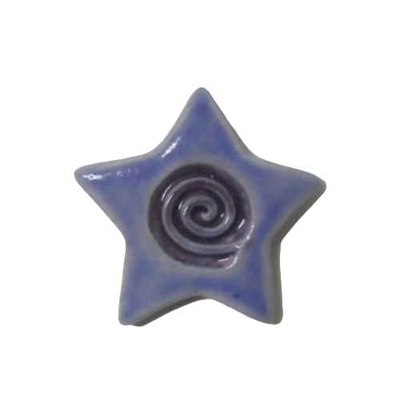
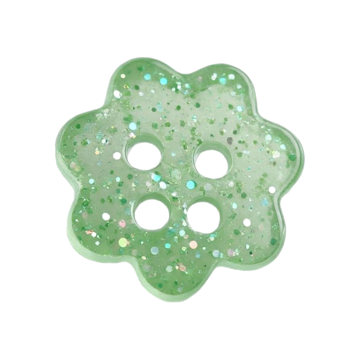
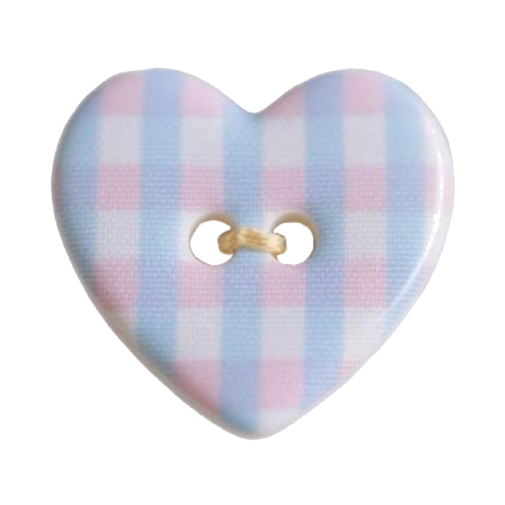
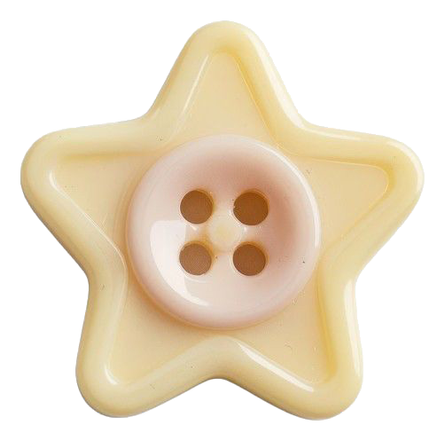

CREATIVE SPACE ID
No. 0610

Name
Yan Luo
Cross-cultural marketing strategist
Audience insight + visual systems + measurable storytelling

Yan Luo / portfolio ID
Cross-cultural communicationist, marketing strategist, visual storyteller, and data-informed creative.
Name
Cross-cultural marketing strategist

Table of contents

Hello there,
Hi, I'm Yan. I'm a cross-cultural marketer and visual storyteller who loves bringing together research, design, language, and people.
Growing up between different cultures has shaped the way I see the world. I'm always curious about how people communicate, what they care about, and how stories can make ideas feel more human. My work often moves between strategy and creativity, from social campaigns and website building to visual design, audience research, and multilingual communication.
I'm drawn to projects that help people feel seen, understood, and connected.


Created visual layouts and graphic design assets for the magazine, supporting storytelling through thoughtful design, typography, and visual presentation.


A business model turned into a quick-read visual framework.

Supported a community-based literacy program that helps elementary school students strengthen reading confidence and engagement.

Created an original animation project exploring visual storytelling through movement, pacing, sound, and emotion.

Street details, signage, mood, and everyday visual research.

Layout rhythm, hierarchy, and publication systems.
Strategy + design
My strongest work sits where audience insight, clear visuals, and cultural context meet.

Visual systems
From magazine layouts to infographics, I like giving information a shape people can follow.


I see language as a way to understand culture and connection. Learning Mandarin, Cantonese, English, and Japanese has shaped how I move through the world, communicate across differences, and tell stories with more empathy.


Software I use
Creative tools, web-building tools, and marketing platforms plated together for strategy, visuals, and campaign execution.
Original plate/tablecloth .clip fileLet's connect
Cross-cultural marketing strategy, visual storytelling, website building, and data-informed campaign work.